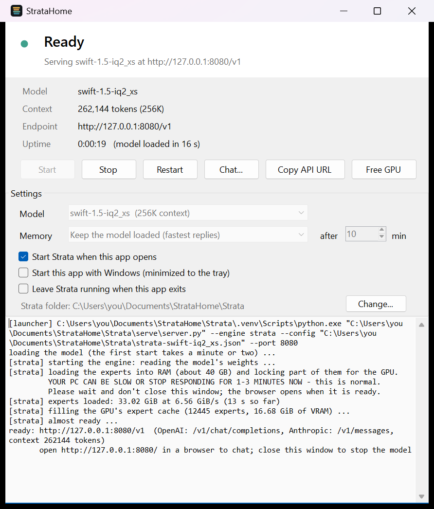
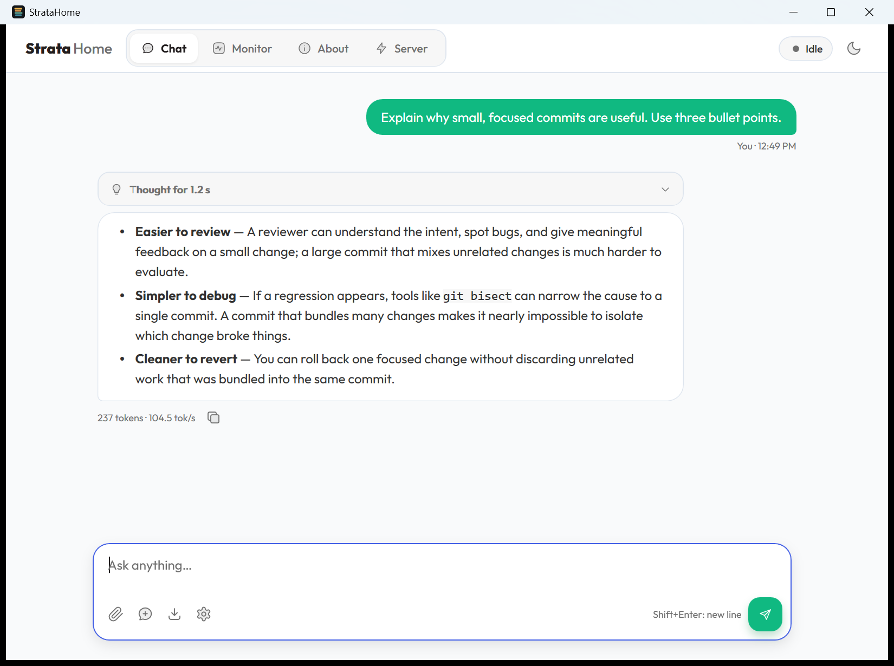

v0.2.0 Free, MIT, unofficial
StrataHome
Run Strata from the Windows tray. No console window, no browser tab, no batch files.
A native desktop app in the look of Strata’s web interface: streaming Chat, live Monitor, About and Server controls. Keep the tray icon; skip the browser.
It needs an existing Strata install, and the .exe is unsigned, so Windows SmartScreen may warn you. Both are explained under Install and Verify.

What it replaces
A console window and a browser tab, or one tray icon.
Strata starts from its own START-HERE.bat. StrataHome takes over that path and leaves the model, and the time it takes to load, exactly as Strata makes them.
Strata’s own start
- START-HERE.batYou run a batch file.
- A console windowIt opens and has to stay open while the model loads and runs.
- A browser tabIt opens when the model is ready. That is where you chat.
Strata’s own log says it plainly: close this window to stop the model
With StrataHome
- A tray iconShows live state: Stopped, Starting, Loading the model, Ready, Idle or Problem.
- A notificationAppears when the model is ready.
- Chat window or any API clientThe native chat window, or any app pointed at
http://127.0.0.1:8080/v1.
Nothing else on the PC needs to be open. The model load itself is still Strata’s.
What it does
Chat, Monitor, About and Server.
- In the tray
-
One icon, six states: Stopped, Starting, Loading the model, Ready, Idle (model unloaded) and Problem.
A notification appears when the model is ready.
Optional and off by default: start with Windows, minimized to the tray.
- Monitor & About
-
The Monitor shows model state, decode and prefill speed, GPU load, VRAM, temperature, power, PCIe, CPU, RAM, disk, context fill and recent requests. About includes a context-length picker with Save and restart.
Copy API URL puts
http://127.0.0.1:8080/v1on the clipboard. It is OpenAI-compatible, so any app that talks to that API can use it.It attaches to a Strata server that was started somewhere else, for example by START-HERE.bat, and can stop it.
- In the chat window
-
Answers stream as Markdown, with collapsible thinking, text-file attachments, and tokens plus tok/s under each answer while it streams. The Sampling drawer controls thinking level, temperature, top-p, top-k, max tokens and seed.
- When you exit
-
Closing the window sends it to the tray. Exiting the app stops a server it started through a Windows job object, unless you choose to leave Strata running.
If you want it to keep running, tick “Leave Strata running when this app exits”.

Memory modes
Choose when the model sits in memory.
A model like Swift 1.5 GSQ-RCO IQ2_XS holds about 36 GB of RAM, plus GPU memory, while it is loaded. StrataHome offers three ways to handle that, and each one has a price.
| Mode | What happens | What it costs |
|---|---|---|
| Keep the model loadedfastest replies | The model stays loaded for as long as Strata runs, so a request starts answering at once. | It keeps using GPU memory and RAM the whole time. |
| Unload when idleafter N minutes | After N minutes without a request the model is unloaded, which frees GPU and RAM. You choose N. | The next request waits while the model loads again. |
| Load on first requestnothing loaded at start | The model is not loaded until something asks for it. | That first request waits while the model loads. |
Two buttons do it by hand: Free GPU and Load now. The wait is Strata’s model load, not StrataHome’s. StrataHome does not load the model faster than Strata; what it removes is the console window, the browser tab and the leftover processes.
Models & recorded performance
Pick the model, then the quant.
Our installed model: Swift 1.5 GSQ-RCO IQ2_XS. The desktop app does not bundle or download model weights.
Snapshot: October 8, 2026. File sizes are decimal GB, summed from the Hugging Face file inventory; GGUF totals exclude separate vision projectors and MTP drafts. Not recorded / Not located means no matching measurement was found in the reviewed sources. It does not mean zero.
Four requested families; all eight GSQ-RCO tiers; both BF16 checkpoints; all 27 publisher standard Swift GGUF tiers; ten Unsloth normal-Qwen quants; three linked Swift accelerator formats. Not an exhaustive catalog of every third-party conversion. MTP and vision projectors excluded as standalone model tiers.
| Model / source | Quant | Files (GB) | Decode tok/s | Mean KLD ↓ | KLD protocol / reference | Quality evidence | Approximate hardware / capacity |
|---|---|---|---|---|---|---|---|
| Normal Qwen | BF16 | 360.00 | Not recorded | Reference (BF16) | BF16 reference | BF16 reference; see model-level benchmarks. | ~360 GB checkpoint; multi-GPU/server-class capacity plus runtime headroom. Not a Strata installer option. |
| Swift 1.5 normal | BF16 | 360.00 | Not recorded | Reference (BF16) | BF16 reference | BF16 reference; see model-level benchmarks. | ~360 GB checkpoint; multi-GPU/server-class capacity plus runtime headroom. Not a Strata installer option. |
| Qwen GSQ-RCO | Q2_0 | 66.42 | 94 [8] | 0.218335 [9] | English C4 prose, 100 chunks; context 512; vs Qwen BF16 | AIME25: 96.67; GPQA-D: 89.39; LCB v6: 81.14; Task average: 89.07 | Planning: 48 GB RAM + 12 GB+ supported GPU + SSD; cache/context/OS need headroom. |
| Qwen GSQ-RCO | IQ2_XS | 68.03 | 79 [8] | 0.200267 [9] | English C4 prose, 100 chunks; context 512; vs Qwen BF16 | AIME25: 96.67; GPQA-D: 87.37; LCB v6: 83.43; Task average: 89.16 | Planning: 48 GB RAM + 12 GB+ supported GPU + SSD; cache/context/OS need headroom. |
| Qwen GSQ-RCO | IQ3_XXS | 75.84 | 62 [8] | 0.114982 [9] | English C4 prose, 100 chunks; context 512; vs Qwen BF16 | AIME25: 100.00; GPQA-D: 91.41; LCB v6: 86.29; Task average: 92.57 | Planning: 64 GB RAM + 12 GB+ supported GPU + SSD; cache/context/OS need headroom. |
| Qwen GSQ-RCO | IQ3_S | 83.62 | 53 [8] | 0.062341 [9] | English C4 prose, 100 chunks; context 512; vs Qwen BF16 | AIME25: 100.00; GPQA-D: 92.93; LCB v6: 86.86; Task average: 93.26 | Planning: 64 GB RAM + 12 GB+ supported GPU + SSD; cache/context/OS need headroom. |
| Swift 1.5 GSQ-RCO | Q2_0 | 66.55 | Not recorded | 0.234242 [9] | English C4 prose, 100 chunks; context 512; vs Swift BF16 | Quant task accuracy not reported in this source; KLD is not task accuracy. | Planning: 48 GB RAM + 12 GB+ supported GPU + SSD; cache/context/OS need headroom. Same-tier estimate; current Swift release not fit-tested here. |
| Swift 1.5 GSQ-RCO | IQ2_XS | 68.15 | 126.0 [local] | 0.188117 [9] | English C4 prose, 100 chunks; context 512; vs Swift BF16 | Quant task accuracy not reported in this source; KLD is not task accuracy. | Planning: 48 GB RAM + 12 GB+ supported GPU + SSD; cache/context/OS need headroom. Same-tier estimate; current Swift release not fit-tested here. |
| Swift 1.5 GSQ-RCO | IQ3_XXS | 75.97 | Not recorded | 0.116077 [9] | English C4 prose, 100 chunks; context 512; vs Swift BF16 | Quant task accuracy not reported in this source; KLD is not task accuracy. | Planning: 64 GB RAM + 12 GB+ supported GPU + SSD; cache/context/OS need headroom. Same-tier estimate; current Swift release not fit-tested here. |
| Swift 1.5 GSQ-RCO | IQ3_S | 83.74 | Not recorded | 0.062556 [9] | English C4 prose, 100 chunks; context 512; vs Swift BF16 | Quant task accuracy not reported in this source; KLD is not task accuracy. | Planning: 64 GB RAM + 12 GB+ supported GPU + SSD; cache/context/OS need headroom. Same-tier estimate; current Swift release not fit-tested here. |
Standard Swift GGUF — all 27 publisher tiers
| Model / source | Quant | Files (GB) | Decode tok/s | Mean KLD ↓ | KLD protocol / reference | Quality evidence | Approximate hardware / capacity |
|---|---|---|---|---|---|---|---|
| Swift 1.5 standard GGUF | Q8_0 | 188.26 | Not recorded | 0.029700 [5] | WikiText-2 test, 100 windows; context 512; vs Swift BF16 | Top-token agreement at 32K: 94.91%; not task accuracy. | Conservative full-file-resident plan (estimate): ~224 GB total RAM+VRAM or unified memory. Assumes weight bytes + 16 GB reserve, rounded to 32 GB; not a tested minimum. Sparse paging may use less; large contexts may need more. |
| Swift 1.5 standard GGUF | Q6_K | 168.11 | Not recorded | 0.032400 [5] | WikiText-2 test, 100 windows; context 512; vs Swift BF16 | Top-token agreement at 32K: 94.34%; not task accuracy. | Conservative full-file-resident plan (estimate): ~192 GB total RAM+VRAM or unified memory. Assumes weight bytes + 16 GB reserve, rounded to 32 GB; not a tested minimum. Sparse paging may use less; large contexts may need more. |
| Swift 1.5 standard GGUF | Q5_K_L | 151.06 | Not recorded | 0.078800 [5] | WikiText-2 test, 100 windows; context 512; vs Swift BF16 | Top-token agreement at 32K: 91.61%; not task accuracy. | Conservative full-file-resident plan (estimate): ~192 GB total RAM+VRAM or unified memory. Assumes weight bytes + 16 GB reserve, rounded to 32 GB; not a tested minimum. Sparse paging may use less; large contexts may need more. |
| Swift 1.5 standard GGUF | Q4_K_L | 139.27 | Not recorded | 0.105100 [5] | WikiText-2 test, 100 windows; context 512; vs Swift BF16 | Top-token agreement at 32K: 90.14%; not task accuracy. | Conservative full-file-resident plan (estimate): ~160 GB total RAM+VRAM or unified memory. Assumes weight bytes + 16 GB reserve, rounded to 32 GB; not a tested minimum. Sparse paging may use less; large contexts may need more. |
| Swift 1.5 standard GGUF | Q5_K_M | 134.67 | Not recorded | 0.164100 [5] | WikiText-2 test, 100 windows; context 512; vs Swift BF16 | Top-token agreement at 32K: 87.34%; not task accuracy. | Conservative full-file-resident plan (estimate): ~160 GB total RAM+VRAM or unified memory. Assumes weight bytes + 16 GB reserve, rounded to 32 GB; not a tested minimum. Sparse paging may use less; large contexts may need more. |
| Swift 1.5 standard GGUF | Q5_K_S | 128.10 | Not recorded | 0.177700 [5] | WikiText-2 test, 100 windows; context 512; vs Swift BF16 | Top-token agreement at 32K: 86.92%; not task accuracy. | Conservative full-file-resident plan (estimate): ~160 GB total RAM+VRAM or unified memory. Assumes weight bytes + 16 GB reserve, rounded to 32 GB; not a tested minimum. Sparse paging may use less; large contexts may need more. |
| Swift 1.5 standard GGUF | Q4_K_M | 119.60 | Not recorded | 0.151200 [5] | WikiText-2 test, 100 windows; context 512; vs Swift BF16 | Top-token agreement at 32K: 88.20%; not task accuracy. | Conservative full-file-resident plan (estimate): ~160 GB total RAM+VRAM or unified memory. Assumes weight bytes + 16 GB reserve, rounded to 32 GB; not a tested minimum. Sparse paging may use less; large contexts may need more. |
| Swift 1.5 standard GGUF | Q3_K_XL | 119.35 | Not recorded | 0.371800 [5] | WikiText-2 test, 100 windows; context 512; vs Swift BF16 | Top-token agreement at 32K: 79.79%; not task accuracy. | Conservative full-file-resident plan (estimate): ~160 GB total RAM+VRAM or unified memory. Assumes weight bytes + 16 GB reserve, rounded to 32 GB; not a tested minimum. Sparse paging may use less; large contexts may need more. |
| Swift 1.5 standard GGUF | Q4_K_S | 113.14 | Not recorded | 0.177900 [5] | WikiText-2 test, 100 windows; context 512; vs Swift BF16 | Top-token agreement at 32K: 87.01%; not task accuracy. | Conservative full-file-resident plan (estimate): ~160 GB total RAM+VRAM or unified memory. Assumes weight bytes + 16 GB reserve, rounded to 32 GB; not a tested minimum. Sparse paging may use less; large contexts may need more. |
| Swift 1.5 standard GGUF | Q4_1 | 111.26 | Not recorded | 0.253200 [5] | WikiText-2 test, 100 windows; context 512; vs Swift BF16 | Top-token agreement at 32K: 85.07%; not task accuracy. | Conservative full-file-resident plan (estimate): ~128 GB total RAM+VRAM or unified memory. Assumes weight bytes + 16 GB reserve, rounded to 32 GB; not a tested minimum. Sparse paging may use less; large contexts may need more. |
| Swift 1.5 standard GGUF | Q2_K_L | 107.15 | Not recorded | 0.542500 [5] | WikiText-2 test, 100 windows; context 512; vs Swift BF16 | Top-token agreement at 32K: 77.28%; not task accuracy. | Conservative full-file-resident plan (estimate): ~128 GB total RAM+VRAM or unified memory. Assumes weight bytes + 16 GB reserve, rounded to 32 GB; not a tested minimum. Sparse paging may use less; large contexts may need more. |
| Swift 1.5 standard GGUF | Q4_0 | 100.60 | Not recorded | 0.252400 [5] | WikiText-2 test, 100 windows; context 512; vs Swift BF16 | Top-token agreement at 32K: 82.53%; not task accuracy. | Conservative full-file-resident plan (estimate): ~128 GB total RAM+VRAM or unified memory. Assumes weight bytes + 16 GB reserve, rounded to 32 GB; not a tested minimum. Sparse paging may use less; large contexts may need more. |
| Swift 1.5 standard GGUF | IQ4_NL | 100.29 | Not recorded | 0.126100 [5] | WikiText-2 test, 100 windows; context 512; vs Swift BF16 | Top-token agreement at 32K: 88.96%; not task accuracy. | Conservative full-file-resident plan (estimate): ~128 GB total RAM+VRAM or unified memory. Assumes weight bytes + 16 GB reserve, rounded to 32 GB; not a tested minimum. Sparse paging may use less; large contexts may need more. |
| Swift 1.5 standard GGUF | IQ4_XS | 97.68 | Not recorded | 0.130500 [5] | WikiText-2 test, 100 windows; context 512; vs Swift BF16 | Top-token agreement at 32K: 88.91%; not task accuracy. | Conservative full-file-resident plan (estimate): ~128 GB total RAM+VRAM or unified memory. Assumes weight bytes + 16 GB reserve, rounded to 32 GB; not a tested minimum. Sparse paging may use less; large contexts may need more. |
| Swift 1.5 standard GGUF | IQ3_M | 93.23 | Not recorded | 0.200500 [5] | WikiText-2 test, 100 windows; context 512; vs Swift BF16 | Top-token agreement at 32K: 86.22%; not task accuracy. | Conservative full-file-resident plan (estimate): ~128 GB total RAM+VRAM or unified memory. Assumes weight bytes + 16 GB reserve, rounded to 32 GB; not a tested minimum. Sparse paging may use less; large contexts may need more. |
| Swift 1.5 standard GGUF | Q3_K_L | 93.19 | Not recorded | 0.384200 [5] | WikiText-2 test, 100 windows; context 512; vs Swift BF16 | Top-token agreement at 32K: 79.44%; not task accuracy. | Conservative full-file-resident plan (estimate): ~128 GB total RAM+VRAM or unified memory. Assumes weight bytes + 16 GB reserve, rounded to 32 GB; not a tested minimum. Sparse paging may use less; large contexts may need more. |
| Swift 1.5 standard GGUF | Q3_K_M | 91.96 | Not recorded | 0.321000 [5] | WikiText-2 test, 100 windows; context 512; vs Swift BF16 | Top-token agreement at 32K: 82.73%; not task accuracy. | Conservative full-file-resident plan (estimate): ~128 GB total RAM+VRAM or unified memory. Assumes weight bytes + 16 GB reserve, rounded to 32 GB; not a tested minimum. Sparse paging may use less; large contexts may need more. |
| Swift 1.5 standard GGUF | IQ3_XS | 91.95 | Not recorded | 0.221100 [5] | WikiText-2 test, 100 windows; context 512; vs Swift BF16 | Top-token agreement at 32K: 85.26%; not task accuracy. | Conservative full-file-resident plan (estimate): ~128 GB total RAM+VRAM or unified memory. Assumes weight bytes + 16 GB reserve, rounded to 32 GB; not a tested minimum. Sparse paging may use less; large contexts may need more. |
| Swift 1.5 standard GGUF | Q3_K_S | 89.44 | Not recorded | 0.325300 [5] | WikiText-2 test, 100 windows; context 512; vs Swift BF16 | Top-token agreement at 32K: 82.59%; not task accuracy. | Conservative full-file-resident plan (estimate): ~128 GB total RAM+VRAM or unified memory. Assumes weight bytes + 16 GB reserve, rounded to 32 GB; not a tested minimum. Sparse paging may use less; large contexts may need more. |
| Swift 1.5 standard GGUF | IQ3_XXS | 88.02 | Not recorded | 0.286800 [5] | WikiText-2 test, 100 windows; context 512; vs Swift BF16 | Top-token agreement at 32K: 83.30%; not task accuracy. | Conservative full-file-resident plan (estimate): ~128 GB total RAM+VRAM or unified memory. Assumes weight bytes + 16 GB reserve, rounded to 32 GB; not a tested minimum. Sparse paging may use less; large contexts may need more. |
| Swift 1.5 standard GGUF | Q2_K | 80.93 | Not recorded | 0.570300 [5] | WikiText-2 test, 100 windows; context 512; vs Swift BF16 | Top-token agreement at 32K: 76.66%; not task accuracy. | Conservative full-file-resident plan (estimate): ~128 GB total RAM+VRAM or unified memory. Assumes weight bytes + 16 GB reserve, rounded to 32 GB; not a tested minimum. Sparse paging may use less; large contexts may need more. |
| Swift 1.5 standard GGUF | IQ2_M | 80.37 | Not recorded | 0.376900 [5] | WikiText-2 test, 100 windows; context 512; vs Swift BF16 | Top-token agreement at 32K: 80.76%; not task accuracy. | Conservative full-file-resident plan (estimate): ~128 GB total RAM+VRAM or unified memory. Assumes weight bytes + 16 GB reserve, rounded to 32 GB; not a tested minimum. Sparse paging may use less; large contexts may need more. |
| Swift 1.5 standard GGUF | IQ2_S | 77.83 | Not recorded | 0.484600 [5] | WikiText-2 test, 100 windows; context 512; vs Swift BF16 | Top-token agreement at 32K: 76.47%; not task accuracy. | Conservative full-file-resident plan (estimate): ~96 GB total RAM+VRAM or unified memory. Assumes weight bytes + 16 GB reserve, rounded to 32 GB; not a tested minimum. Sparse paging may use less; large contexts may need more. |
| Swift 1.5 standard GGUF | IQ2_XS | 77.74 | Not recorded | 0.513600 [5] | WikiText-2 test, 100 windows; context 512; vs Swift BF16 | Top-token agreement at 32K: 76.93%; not task accuracy. | Conservative full-file-resident plan (estimate): ~96 GB total RAM+VRAM or unified memory. Assumes weight bytes + 16 GB reserve, rounded to 32 GB; not a tested minimum. Sparse paging may use less; large contexts may need more. |
| Swift 1.5 standard GGUF | IQ2_XXS | 75.19 | Not recorded | 0.605200 [5] | WikiText-2 test, 100 windows; context 512; vs Swift BF16 | Top-token agreement at 32K: 75.58%; not task accuracy. | Conservative full-file-resident plan (estimate): ~96 GB total RAM+VRAM or unified memory. Assumes weight bytes + 16 GB reserve, rounded to 32 GB; not a tested minimum. Sparse paging may use less; large contexts may need more. |
| Swift 1.5 standard GGUF | IQ1_M | 72.01 | Not recorded | 0.906700 [5] | WikiText-2 test, 100 windows; context 512; vs Swift BF16 | Top-token agreement at 32K: 69.57%; not task accuracy. | Conservative full-file-resident plan (estimate): ~96 GB total RAM+VRAM or unified memory. Assumes weight bytes + 16 GB reserve, rounded to 32 GB; not a tested minimum. Sparse paging may use less; large contexts may need more. |
| Swift 1.5 standard GGUF | IQ1_S | 70.10 | Not recorded | 1.160100 [5] | WikiText-2 test, 100 windows; context 512; vs Swift BF16 | Top-token agreement at 32K: 65.15%; not task accuracy. | Conservative full-file-resident plan (estimate): ~96 GB total RAM+VRAM or unified memory. Assumes weight bytes + 16 GB reserve, rounded to 32 GB; not a tested minimum. Sparse paging may use less; large contexts may need more. |
Normal Qwen — all 10 Unsloth quantized tiers
| Model / source | Quant | Files (GB) | Decode tok/s | Mean KLD ↓ | KLD protocol / reference | Quality evidence | Approximate hardware / capacity |
|---|---|---|---|---|---|---|---|
| Normal Qwen / Unsloth GGUF | UD-IQ1_S | 72.55 | Not recorded | 0.396070 [7] | Unsloth guide; corpus/context not specified in displayed table; context unspecified; vs Qwen source | Top-token agreement: 77.325%; not benchmark task accuracy. | Unsloth MTP guide: about 76 GB total RAM+VRAM or unified memory for this bit tier [7]; context/OS headroom still matters. Strata SSD-paging can run with less, at a speed cost. |
| Normal Qwen / Unsloth GGUF | UD-IQ1_M | 74.54 | Not recorded | 0.314739 [7] | Unsloth guide; corpus/context not specified in displayed table; context unspecified; vs Qwen source | Top-token agreement: 79.691%; not benchmark task accuracy. | Unsloth MTP guide: about 76 GB total RAM+VRAM or unified memory for this bit tier [7]; context/OS headroom still matters. Strata SSD-paging can run with less, at a speed cost. |
| Normal Qwen / Unsloth GGUF | UD-Q2_K_XL | 78.87 | Not recorded | 0.224607 [7] | Unsloth guide; corpus/context not specified in displayed table; context unspecified; vs Qwen source | Top-token agreement: 82.715%; not benchmark task accuracy. | Unsloth MTP guide: about 80 GB total RAM+VRAM or unified memory for this bit tier [7]; context/OS headroom still matters. Strata SSD-paging can run with less, at a speed cost. |
| Normal Qwen / Unsloth GGUF | UD-IQ3_XXS | 81.96 | Not recorded | 0.165120 [7] | Unsloth guide; corpus/context not specified in displayed table; context unspecified; vs Qwen source | Top-token agreement: 85.414%; not benchmark task accuracy. | Unsloth MTP guide: about 91 GB total RAM+VRAM or unified memory for this bit tier [7]; context/OS headroom still matters. Strata SSD-paging can run with less, at a speed cost. |
| Normal Qwen / Unsloth GGUF | UD-Q3_K_XL | 89.99 | Not recorded | 0.106504 [7] | Unsloth guide; corpus/context not specified in displayed table; context unspecified; vs Qwen source | Top-token agreement: 88.315%; not benchmark task accuracy. | Unsloth MTP guide: about 91 GB total RAM+VRAM or unified memory for this bit tier [7]; context/OS headroom still matters. Strata SSD-paging can run with less, at a speed cost. |
| Normal Qwen / Unsloth GGUF | UD-IQ4_XS | 93.68 | Not recorded | 0.083630 [7] | Unsloth guide; corpus/context not specified in displayed table; context unspecified; vs Qwen source | Top-token agreement: 89.554%; not benchmark task accuracy. | Unsloth MTP guide: about 97 GB total RAM+VRAM or unified memory for this bit tier [7]; context/OS headroom still matters. Strata SSD-paging can run with less, at a speed cost. |
| Normal Qwen / Unsloth GGUF | UD-Q4_K_XL | 111.33 | 7–8.5 [13] | 0.046893 [7] | Unsloth guide; corpus/context not specified in displayed table; context unspecified; vs Qwen source | Top-token agreement: 92.255%; not benchmark task accuracy. | Unsloth MTP guide: about 115 GB total RAM+VRAM or unified memory for this bit tier [7]; context/OS headroom still matters. Strata SSD-paging can run with less, at a speed cost. |
| Normal Qwen / Unsloth GGUF | UD-Q5_K_XL | 158.29 | Not recorded | 0.030415 [7] | Unsloth guide; corpus/context not specified in displayed table; context unspecified; vs Qwen source | Top-token agreement: 93.680%; not benchmark task accuracy. | Unsloth MTP guide: about 164 GB total RAM+VRAM or unified memory for this bit tier [7]; context/OS headroom still matters. Strata SSD-paging can run with less, at a speed cost. |
| Normal Qwen / Unsloth GGUF | UD-Q6_K_XL | 169.17 | Not recorded | 0.027091 [7] | Unsloth guide; corpus/context not specified in displayed table; context unspecified; vs Qwen source | Top-token agreement: 94.089%; not benchmark task accuracy. | Conservative full-file-resident plan (estimate): ~192 GB RAM+VRAM or unified memory. Weight bytes + 16 GB reserve rounded to 32 GB; not a tested minimum; paging/context alter needs. |
| Normal Qwen / Unsloth GGUF | Q8_0 | 188.23 | Not recorded | 0.026574 [7] | Unsloth guide; corpus/context not specified in displayed table; context unspecified; vs Qwen source | Top-token agreement: 94.122%; not benchmark task accuracy. | Unsloth MTP guide: about 200 GB total RAM+VRAM or unified memory for this bit tier [7]; context/OS headroom still matters. Strata SSD-paging can run with less, at a speed cost. |
Swift — three additional accelerator formats
| Model / source | Quant | Files (GB) | Decode tok/s | Mean KLD ↓ | KLD protocol / reference | Quality evidence | Approximate hardware / capacity |
|---|---|---|---|---|---|---|---|
| Swift 1.5 non-GGUF | AWQ W4A16 | 177.25 | Not recorded | Not located | No quant-specific evaluation located | No quant-specific task score or KLD located; card repeats BF16 benchmarks. | Compatible vLLM/runtime and capacity for listed weight files plus cache; no tested minimum found. |
| Swift 1.5 non-GGUF | AutoRound W4A16 | 177.24 | Not recorded | Not located | No quant-specific evaluation located | No quant-specific task score or KLD located; card repeats BF16 benchmarks. | Compatible vLLM/runtime and capacity for listed weight files plus cache; no tested minimum found. |
| Swift 1.5 non-GGUF | NVFP4 | 186.40 | Not recorded | Not located | No quant-specific evaluation located | No quant-specific task score or KLD located; card repeats BF16 benchmarks. | Native NVFP4 needs compatible NVIDIA Blackwell runtime; listed weight size exceeds one 24 GB GPU. Add cache/runtime headroom. |
Speed, hardware and context together
| Model / quant | Short decode tok/s | 128K decode tok/s | 32K prefill tok/s | Machine / conditions |
|---|---|---|---|---|
| Qwen GSQ-RCO / Q2_0 | 94 [8] | 76 | 2650 | RTX 5070 12 GB; Ryzen 5 7600; 64 GB RAM; Strata. 4K answer / short chat; prefill measured at 32K prompt; Q2_0 engine 0.1.36, other tiers 0.1.26. |
| Qwen GSQ-RCO / IQ2_XS | 79 [8] | 63 | 2090 | RTX 5070 12 GB; Ryzen 5 7600; 64 GB RAM; Strata. 4K answer / short chat; prefill measured at 32K prompt; Q2_0 engine 0.1.36, other tiers 0.1.26. |
| Qwen GSQ-RCO / IQ3_XXS | 62 [8] | 49 | 1750 | RTX 5070 12 GB; Ryzen 5 7600; 64 GB RAM; Strata. 4K answer / short chat; prefill measured at 32K prompt; Q2_0 engine 0.1.36, other tiers 0.1.26. |
| Qwen GSQ-RCO / IQ3_S | 53 [8] | 46 | 1620 | RTX 5070 12 GB; Ryzen 5 7600; 64 GB RAM; Strata. 4K answer / short chat; prefill measured at 32K prompt; Q2_0 engine 0.1.36, other tiers 0.1.26. |
| Swift 1.5 GSQ-RCO / IQ2_XS | 126.0 [local] | Not recorded | Not recorded | RTX 5090 Laptop 24 GB; Core Ultra 9 275HX; 64 GB RAM; Strata; configured max context 262144, actual prompt length unrecorded. One installed-model run, 265 generated tokens including thinking; not a sweep or a proof for the current HF release. |
| Normal Qwen / Unsloth GGUF / UD-Q4_K_XL | 7–8.5 [13] | Not recorded | Not recorded | RTX 5070 12 GB; 64 GB RAM; SSD-paged experts, 40 GiB expert budget. Separate Strata workload/configuration; not comparable to short-chat GSQ table. |
Separate llama.cpp result: Q2_0 93.79 decode / 367.49 prompt tok/s; IQ2_XS 70.30 / 108.19. The displayed ISTA performance section does not specify hardware; do not compare it directly with Strata’s gaming-PC results. [3]
Model-level quality: BF16, not quant scores
| Benchmark | Normal Qwen | Swift 1.5 | Base tokens | Swift tokens |
|---|---|---|---|---|
| GPQA-Diamond | 89.80% | 89.60% | 17,683 | 7,823 |
| MMLU-Pro | 87.75% | 87.20% | 3,528 | 1,519 |
| IFBench | 73.20% | 70.13% | 8,310 | 4,411 |
| LiveCodeBench v6 | 88.40% | 90.39% | 17,833 | 9,849 |
| Terminal-Bench 2.1* | 67.64% | 69.66% | 40,591 | 45,428 |
Mean thinking tokens, except Terminal-Bench (total output). Xhigh, MTP disabled for the reasoning evaluation. Terminal-Bench serving conditions differ; Swift used concurrency 8 and a context-recovery fix. Quant-specific task scores are not inferred from this table. [2]
Read before comparing KLD, speed or hardware
- Our installed model is Swift 1.5 GSQ-RCO IQ2_XS. The saved Strata run reports 126.0 tok/s over 265 generated tokens (thinking included), with 128.1 tok/s during answering. Hardware: RTX 5090 Laptop 24 GB, Core Ultra 9 275HX, 64 GB RAM. This is one short run, not an average or a benchmark sweep; configured maximum context was 262144, not a measured 262K prompt. The installed weights were not hash-matched to today’s Hugging Face revision.
- Qwen GSQ-RCO speeds [8] are Strata’s recorded RTX 5070 12 GB / Ryzen 5 7600 / 64 GB RAM results. Short-chat decode uses 4K answers; Q2_0 used engine 0.1.36, the other tiers 0.1.26. Prefill uses a 32K prompt. These are not Swift measurements or promises for a different PC.
- KLD is divergence from a reference distribution, not percent accuracy. The GSQ rows use English C4 prose at 512 tokens; standard Swift uses WikiText-2 at 512 tokens; Unsloth’s displayed table does not specify corpus/context. Do not rank these protocols against each other. Qwen and Swift also use different BF16 references, so cross-family KLD does not establish which model is smarter.
- Strata capacity estimates [8]: Q2_0 / IQ2_XS normally target 48 GB RAM; IQ3_XXS / IQ3_S target 64 GB, with a supported 12 GB+ GPU and SSD. Original GSQ transformer weights are about 37.6 / 39.2 / 47.0 / 54.8 GB; the ~28.8 GB n-gram lookup can remain mapped on SSD. Swift estimates use corresponding tiers, not a verified fit test of the current release. Do not infer Swift memory residency from shard 1: Swift splits are packaged differently.
- For other formats, weight-file size is not a VRAM minimum or a guarantee of fitting. CPU/GPU offload, sparse lookup paging, OS reserve, context/KV cache, vision and MTP change RAM/VRAM use. BF16 checkpoints are about 360 GB including auxiliary weights. Supplemental formats are reference options, not a claim that StrataHome/Strata can load every file without conversion.
- Publisher BF16 benchmark scores must not be copied onto the quantized rows. The five model-level comparisons below are UkisAI’s own BF16 evaluation; ISTA’s GSQ task scores come from a separate evaluation. Values above the BF16 reference in ISTA’s tests can reflect variance, not a guaranteed improvement.
- Swift’s reduced reasoning length is not a 1.8× tokens-per-second claim. At GPQA xhigh, the publisher reports 55.8% fewer mean thinking tokens and 63.4% fewer median tokens. Accuracy differences vary by task and reasoning setting; see the scores below instead of treating “less than 1% loss” as universal.
- Model licences are separate from StrataHome’s MIT licence. Consult each model repository’s current terms; Swift and Qwen have custom licence conditions. Two ordinary HF checkpoint links contain BF16, not GGUF quant menus.
Full GitHub reference and sources · Download the 50-row data snapshot · Local speed evidence
Install
Three steps, one small file.
Requirements and verification
Unsigned, so here is how to check it.
- Windows 10 (1903 or newer) or Windows 11, 64-bit.
- An existing Strata install, with its START-HERE.bat run once.
- Aimed at gaming PCs that run Strata: NVIDIA RTX or AMD, 12 GB+ of VRAM.
- Windows only. StrataHome is not a model and does not make anything faster.
SmartScreen may warn you
StrataHome.exe is not code-signed. Windows may show “Windows protected your PC”. Choose More info, then Run anyway. Compare the SHA-256 listed in this section first, or build it yourself with build.cmd.
- SHA-256
- 98b82d7210fb8defd7fce8f6b15eec9b8b11b055879ed4326df31c6854163bb8For StrataHome.exe v0.2.0.
- Size
- 391,680 bytes, a single .exe
- Memory
- WPF desktop window; closing to the tray trims its working set
- Network
- none except localhost, no telemetry
- Checks
- 14 lifecycle checks and 28 UI checksRun
StrataHome.exe --selftestandStrataHome.exe --instance test --uitest. The separate--uitest-restartadds four context save/restart/restore checks and restarts Strata twice. - Build
build.cmd, using the C# compiler that ships with Windows, no SDK
Questions
Short answers.
Is it official?
No. StrataHome is an unofficial launcher and is not affiliated with Strata or its author. Strata is MIT licensed. Models have their own licences.
Does it send data anywhere?
No. It makes no network connections except to localhost, and it sends no telemetry. The source is public, and you can build it yourself.
What happens when I close it?
The model server stops with it, through a Windows job object, so a model that holds tens of gigabytes of memory is never left running by accident. Tick “Leave Strata running when this app exits” if you want it to keep going.
Why is it unsigned?
This release has no code-signing certificate, so Windows cannot show a verified publisher and SmartScreen may warn. What you get instead: the SHA-256, the source, and build.cmd for anyone who prefers to build it.